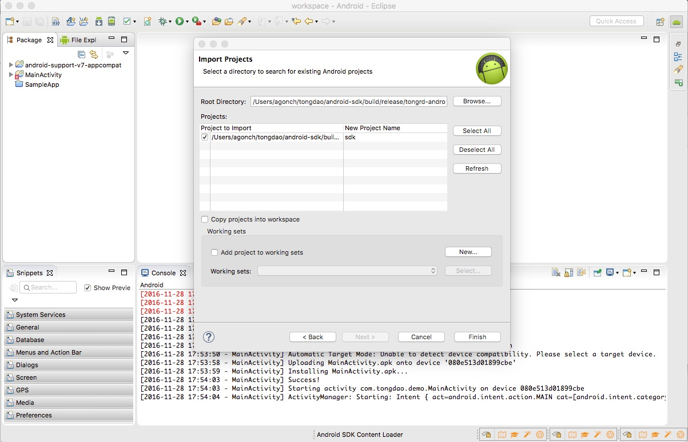

Quick Start
The Tongdao API for iOS can be configured in two ways. If you use Cocopods see the "Quick Start - Cocopods" section. Otherwise, if you did not use Cocopods, see the "Quick Start - Manual installation" section.
1. Cocopods Installation
Installing the SDK via the iOS CocoaPod automates the majority of the installation process for you.
install this SDK. Simply run the following command to get started:
$ sudo gem install cocoapods
Note: If you are prompted to overwrite the rake executable please refer to the Getting Started Directions on CocoaPods.org for further details.
Note: If you have issues regarding CocoaPods, please refer to the CocoaPods Troubleshooting Guide.
CONSTRUCTING THE PODFILE.
Now that you’ve installed the CocoaPods Ruby Gem, you’re going to need to create a file in your Xcode project called Podfile.
Add the following line to your podfile and save it within your Xcode project
pod 'TongDaoSDK', '~>3.2.3'
INSTALLING THE TONGDAO SDK
To install the TongDao SDK Cocoapod, navigate to the directory of your Xcode app project within your terminal and run the following command:
pod install
At this point you should be able to open the new Xcode project workspace created by CocoaPods.
You may now continue to step 3.
2. Manual installation
To start, download the Tongdao SDK from here:
TongDao SDK
Unpack it and you will see two projects: demo and sdk. In Eclipse, click "File" -> "Import". Choose "Android" -> "Existing Android Code Into Workspace"

Once the SDK project is imported, right-click it and click "Properties". Then click on the "Android" section on the left. Make sure the build target of the SDK is set to Android 7.1.1 (api 25).
Also, make sure that "Is Library" is checked.

Now, right-click on your own project, click "Properties". Go into the "Android" section and make sure that "SDK" is added as a library.

3. Code Integration
Next, you will need an Application object. If you already have an application object in your code, skip this part.
In your AndroidManifest.xml add the following:
You can replace TongDaoApplication with whatever other name you'd like.
In your TongDaoApplication, add the following code:
public class TongDaoApplication{
...
private TongDao tongDao;
@Override public void onCreate() { super.onCreate(); if (tongDao == null){ tongDao = TongDao.getInstance(this,DataTool.APP_KEY); } }
synchronized public TongDao getTongDao() { if (tongDao == null){ tongDao = TongDao.getInstance(this,DataTool.APP_KEY); } return tongDao; }
...
}
now you'll be able to access the TongDao SDK through this object in your activities.
If you have the user ID of your app's user, you can call our SDK this way instead:
tongDao = TongDao.getInstance(this,DataTool.APP_KEY,userId);
4. Logging in
When the user logs in, you can call this function:
tongDao.login(appContext, userId);
5. Logging out
Likewise, when the user logs out, you can call this function:
tongDao.logout(appContext);
6. Next Steps
That’s it, TongDao is now integrated in your application ! Take a look at the next steps to unleash TongDao full potential.